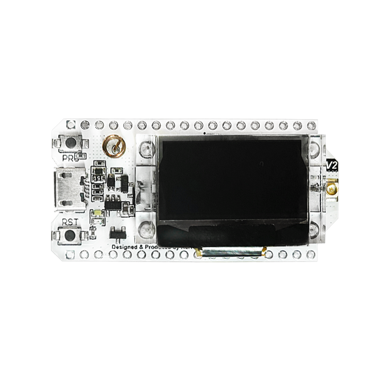
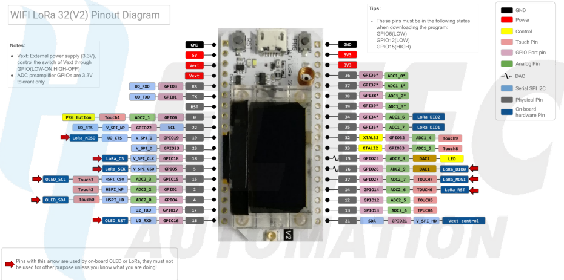

Heltec WiFi LoRa 32 V2
The Heltec WiFi LoRa32 is a development board based on an ESP32 microcontroller. It is designed for LoRa application.
 Heltec WiFi LoRa32 V2 |
Features
ESP32 (240MHz Tensilica LX6 dual-core+1 ULP, 600 DMIPS)
LoRa Node Chip SX1276/SX1278
OLED Display
Battery Charger 3.7V lithium (SH1.25 x 2 socket)
LoRa ANT(IPEX1.0)
Pinout
Most of I/O pins are broken out to the header pins as displayed here:
 Heltec WiFi LoRa32 V2 Pinout |
Schematic
https://resource.heltec.cn/download/WiFi_LoRa_32/V2/WiFi_LoRa_32_V2(433%2C470-510).PDF
Serial Console
UART0 is, by default, the serial console. It connects to the on-board CP2102 converter.
Configurations and Flashing
All of the configurations presented below can be tested by running the following commands:
$ ./tools/configure.sh heltec_wifi_lora32:<config_name>
Where <config_name> is the name of board configuration you want to use, i.e.: nsh, buttons, wifi…
Flashing is done in the default way for ESP32 boards using:
$ make flash ESPTOOL_PORT=/dev/ttyUSB0 -j
Then use a serial console terminal like minicom or picocom` configured to 115200 8N1.
nsh
Basic NuttShell configuration (console enabled in UART0, exposed via USB connection by means of CH340 converter, at 115200 bps).
sx1276
This board profile enables the SX1276 transceiver to RX and TX (half-duplex) communication using FSK protocol.
In order to test it you need to flash two boards with this same firmware.
Board 1 will be the transmitter, then execute:
nsh> sx127x -m 1 -t
Board 2 will be the receiver, then execute:
nsh> sx127x -m 1
Note: The default configuration is to 915MHz, you need to change the configuration if your boards are using other frequencies.